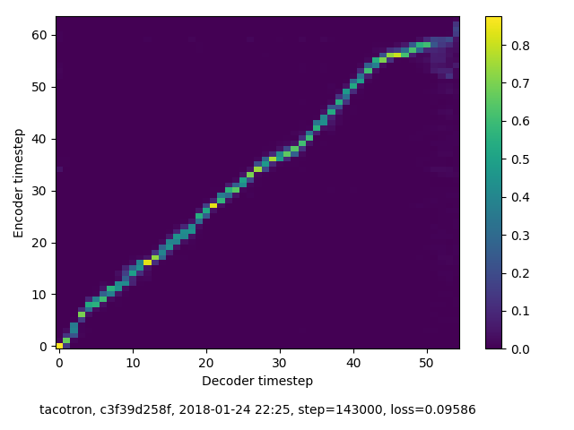
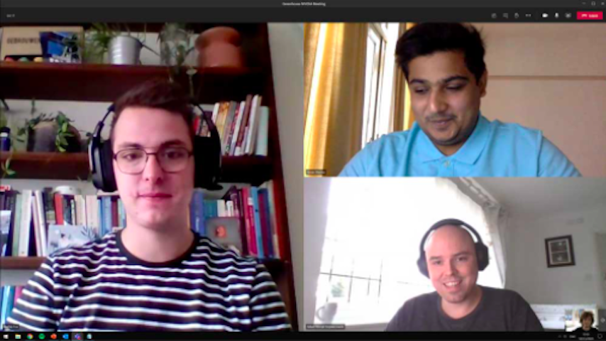

RESEARCH
Main goal of the project to send personalized messages to PSV Fans using Dynamic audio, I looked into various possibilities, these are as follows:
Resemble.AI
As we needed a digital clone of voice we started looking into tools that are capable of doing that and this was one the easy solution, well as it sounded at first. I decided to try it out and make a clone of my own voice which is possible at theur website. If i take a look at their website it is fairly easy to create a clone of my voice, yOu can start by clicking on create voice and then you have to record 50 sentences provided by the website, They suggest that the recording should be done is a studio for better output but that was not available at that time and i started to clone my voice, and i recieved a clone of my voice within 30 minutes after I finished. I was very excited for the results but turns out it was horrible it did not sound like a voice it was all distortion. Here is an example voice from there main website and on the right is the cloned voice.


Tacotron
The second tool I tried was Tacotron, It looked really promising in the start, as it allows you to clone the audio sample only with 5 seconds of audio input. It is an open source tool and requires a lot of dependencies in order to run, It was very difficult to set it up, it took the whole group 3 days to get it up and running and finally we were able to clone our own voice. The results were decent compared to other tools, but they were not great. After some time we showed it to the client and they were not impressed. As the audio input can not be increased to there was no chance of improvement and the audio quality remained inappropriate.
Here is an example output of my cloned voice.
Possibilty of Dutch Voice Clone
After testing the available tools, we have come to the conclusion that we want to work with Tacotron 2, as it best meets our requirements. To ensure that Tacotron also receives a Dutch output, a dataset must first be created. This can be done by collecting hours of Dutch voice sounds and then training a dataset with this data via an external program. It is important that you have a clear voice without background noises, with a text file that states what is said in the audio files. For this I like to use audiobooks, newsreels and press conferences as this is commonrecorded without background sound, and the narrated text can often be found online. An additional advantage of audiobooks is that you get a few hours of recordings with one audio file. Because the more training data you provide, the more realistic the output will ultimately sound. During my research period I found out that Handpicked Agencies in Breda (where I realized my S4 professional task project for) has already been able to create a working dataset for Tacotron by means of audiobooks. Unfortunately, this does not sound realistic enough for our purposes.

Keithito
After we realised that we need to create a dutch dataset in order to train a vocie clone. So I started to look into possibilities. Kiethito is designed to learn the pronunciation of words so we provide text and audio output of the same text, it would be really diffficult if we had to record hours of data just to create the dataset but fortunately for us it is possible to train the dataset with the help of Audio books and that is a major advantage as the input (text + speech) is avaialable easily. As I moved forward I realised that even though it is possible to create a data set, Kiethito is not supported by the developer anymore and the developer himself suggest not to use this tool in his Github repository. In the end I was able to get everything working up to converting text to an audio file with a pre-trained model, the result you can listen to on the right. But when training my own model, there were so many errors due to outdated software that no longer works together that I started looking for alternatives.
TensorFlow TTS
TensorFlow is an open source machine learning platform, which create numerous amount of tools to keep up with the new technology. They also have a TTS tool than could serve us as one of the alternatives. One of the advantages of tensorflow TTS over Kiethito is that the developer is tensorflow itslef which is a huge company compared to one person thus we have timely updates on the tech by tensorflow. There is again a git repo available which keep updating frequently but the way it is summarized it is very difficult to understand how to setup and get started.
Also the specifications required to run this is very high and at that time a pc was not available for me and one of my team member tried this with a already trained dataset. When actually training the model I kept getting the error that my RAM was full, he tried to solve this by splitting the training into smaller sections, but unfortunately this did not help. Later I got my PC and I was able to train his voice with the availble dataset.
Here is how his cloned voice sounds like.


NVIDIA NeMo
At this point we have had very little success but it was not enough to make PSV happy as the output sound is not realistic and they do not ant robotic sound. Nothing much looked promising enough to keep up with. But now we had our weekly meeting with the team leader and he introduced us to someone from NVIDIA for help and look into possibilites within NVIDIA.
We arranged a meeting asap with the contact that Tim gave us, His name was Adam Henryk Grzywaczewski (Deep Learning Solution Architect at NVIDIA). He was very enthusiastic about our concept for PSV, and recommended that we use
NVIDIA NeMo : a toolkit for Conversational AI. He even propsed to have bi-weekly meetings with him to make sure we will be succesful in our project.
There was good support from NVIDIA but again not much from PSV, Turns out we need super computers for 1 week to continue working with Nemo in order to create a cloned voice which costs around 10,000 euros which is not acceptabe by PSV and in the time of pandemic that is understandable.
Even though we ended up not continuing with Nemo, I learned quite a lot about the implementation as I worked with docker, created various containers and trained the containers with required properties. it was again a disappointing but fun process.
Also, we only heard English speech from NeMo. How good it would sound in Dutch is still the question. Based on this, we have decided to look for a more reliable alternative.
Synthesia.io
With more research we found that there is a company that basically provides everything which we need, Synthesia allows you to make AI generated video using your own voice in any language not only that it also generates a video of you saying the script with perfect lip sync. When I saw this first time and talked with the group we were as excited as one could be. It looked like we finally have something that can be the perfect solution. Synthesia is a very good platform it fulfills all our needs but it comes with monthly subscription costs and even with the subsription we can only make 200 videos per month which is way less than what we need. So again, we had a meeting with PSV showed them the concept video and as always they told us that it is not affordable. For us as developers it was also a disappointment as there was very little to create as most of the things were doable by the API which was available from Synthesia.
Here is an example video of what synthesia is capable of, this video is fully genrate by AI and all the rights are reserved to synthesia..io.
PLAN B
We faced a lot of disappointment while going through the voice cloning research, I made a lot of prototypes, did a lot of research but nothing was usable in our final goal, the sound output was not realistic in any of the goven case.
I looked into Smauel jackson's voice in alexa from Amazon and it turns out that was a one year long project and The actor recorded for more than 100 hours for that kind of output.
Recording time is one of the constraints from PSV and the player is not avialable for more than maximum of 2 hours to record making it impossible to generate a realisitic voice clone. At this point we were certain that we have to change the concept.
In our next client Meeting we discussed the results with PSV and they undderstood that the technology is not there yet where you can create an actual sounding voice clone with just two hous of audio input recording.
Further they appreciated our work as we have been very busy with that research, Later we came to a concept where we use google home for the personalisation part in the video. and the research below is related to that concept.
Google TTS
In our new concept we use speech synthesis by google, i.e. Google TTS. There are many options such as Microsoft Azure, Amazon polly and many other. But in our case google TTS is our best bet as there is an API available and most of the developers in the team are familar with the google API, and the speech syntesis output is near perfect and well recognised by common people because the "OK GOOGLE" service is widely used. PSV also has connections with google home and they want us to use the voice of google as well.
I created a prototype that uses Google API and then translate the text into speech which will mainly be used to translate names into speech. Google TTS is available in Dutch so it won't be difficult to pronounce dutch names. All these facilits provided by gogle TTS makes it the best suited option.
Using The API speech synthesis could be as easy as three line of code once I set up everything at google developers console and my application. For more details and the prototype please refer to the application.
And here is how the data flow works in TTS
And here is the sample TTS voice from google on the left is female voice and on the right is male voice available in dutch.
Hosting
As our main goal now is to send a personlized video we have to look into possibilties of sending a video via an email. After research I found out that I can not directly include video in the e-mail as it is not supported. So we have to host the video somewhere, in a technical meeting with PSV we disciussed on how they deal with sending videos via email and they told us that they use their own hosting service, which is a very good idea but not when you have to host thousands of videos on a daily basis. Our idea is to send videos to fans on theirr birthdays and on average there are 600+ people who have bithdays on any given day in PSV's database.
So in short we will be uploading 600-1000 videos per day and we need a solution that is cheaper than PSV storage and allow us to upload large number of videos everyday.
Looking into video hosting platforms, YouTube is the first thing that comes to a developers mind as it is reliable, fast and free, but there is a disadvantage which is youtube only allows you to uplaod a miximum of 50 video per day per account, and this is enogh for us to discard youtube as an option as we already know that we need to upload 600+ video every day.
Vimeo
Vimeo is considered one of the best hosting platforms after YouTube, it is used by many big companies in order to host their marketing videos, promotion and much more. After a bit of research, we concluded that it is the best suitable option for PSV. It is a professional hosting service, and our use case is one of the core features of Vimeo. It is not free but very affordable they provide plans for all users. The business plan allows us to upload 5 TB videos per month, there is no limit on how many videos can be uploaded per day. It costs €40/month, and these prices suits PSV.
Also Vimeo provides and API to host videos, and that is exactly what I need. I quickly registered for a free trial period and apply for my client id and client secret which were necesary to create a prototype, within 24 hours I received my credentials and created a prototype for Vimeo as well that uploads video autmatically to vimeo on give date and time, also it is possible to retrieve the link and that is one of the most important and useful features, as we need the link twhere the video is hosted because this video will be shown at PSV's landing page as an iframe.
Please refer to the application for the prototype.
Here is a screenshot of my vimeo account this video is uploaded to vimeo using my application and as you can see it was sceduled to be uploaded on 25 december.
Advice
Based on our research we have created an advisory report where we worte our conclusions on each technology we tried for voice cloning, I think it will be very helpful for greenhouse, as they already hred new students to continue working on the project. we have done a solid research which will definitely help other students ti just pick up the project and ove forward without diving into non usefull tech, hasslefree. Here is a link to the advisory Report.
Brand Research
Initially we also did research on the basics of PSV, Liek the brand, How they work, what are theier main goals, target groups, competitors, social media reach etc. Everything can be found here in the research report.